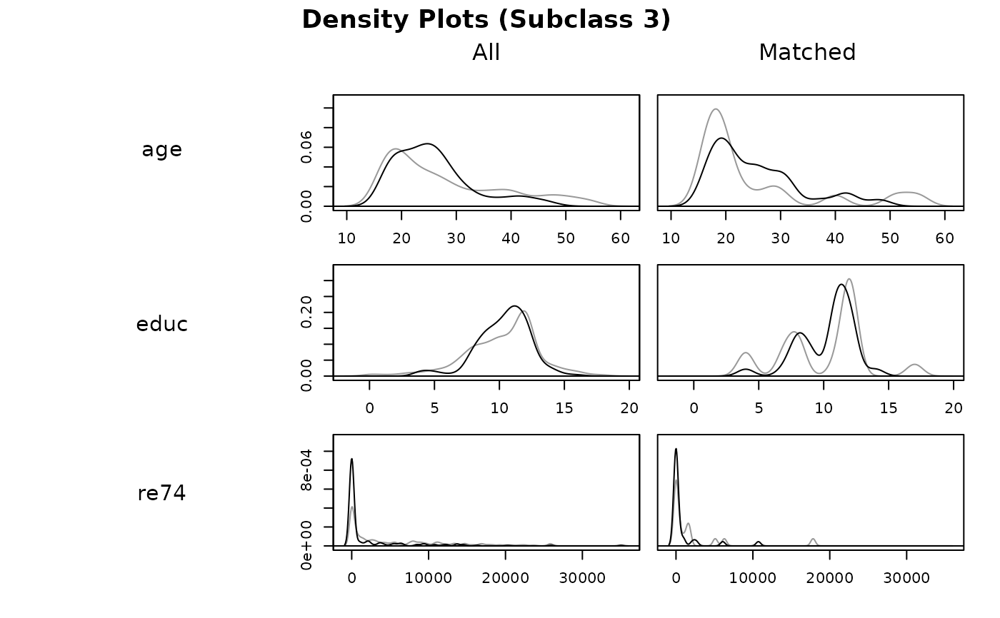
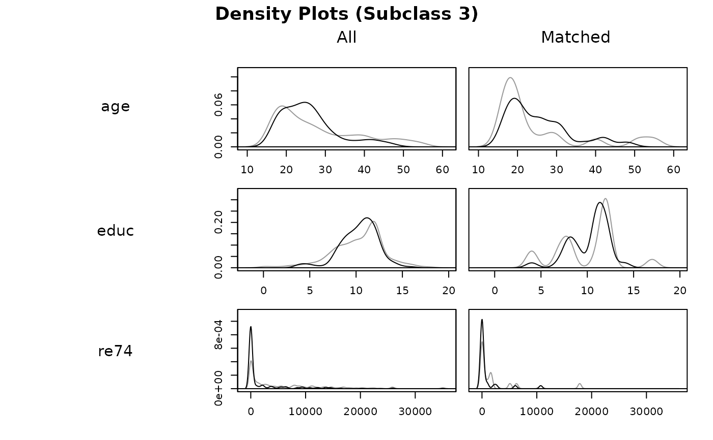

Generate Balance Plots after Matching and Subclassification
Source:R/plot.matchit.R
plot.matchit.RdGenerates plots displaying distributional balance and overlap on covariates
and propensity scores before and after matching and subclassification. For
displaying balance solely on covariate standardized mean differences, see
plot.summary.matchit(). The plots here can be used to assess to what
degree covariate and propensity score distributions are balanced and how
weighting and discarding affect the distribution of propensity scores.
Arguments
- x
a
matchitobject; the output of a call tomatchit().- type
the type of plot to display. Options include
"qq","ecdf","density","jitter", and"histogram". See Details. Default is"qq". Abbreviations allowed.- interactive
logical; whether the graphs should be displayed in an interactive way. Only applies fortype = "qq","ecdf","density", and"jitter". See Details.- which.xs
with
type = "qq","ecdf", or"density", for which covariate(s) plots should be displayed. Factor variables should be named by the original variable name rather than the names of individual dummy variables created after expansion withmodel.matrix. Can be supplied as a character vector or a one-sided formula.- data
an optional data frame containing variables named in
which.xsbut not present in thematchitobject.- ...
arguments passed to
plot()to control the appearance of the plot. Not all options are accepted.- subclass
with subclassification and
type = "qq","ecdf", or"density", whether to display balance for individual subclasses, and, if so, for which ones. Can beTRUE(display plots for all subclasses),FALSE(display plots only in aggregate), or the indices (e.g.,1:6) of the specific subclasses for which to display balance. When unspecified, ifinteractive = TRUE, you will be asked for which subclasses plots are desired, and otherwise, plots will be displayed only in aggregate.
Details
plot.matchit() makes one of five different plots depending on the
argument supplied to type. The first three, "qq",
"ecdf", and "density", assess balance on the covariates. When
interactive = TRUE, plots for three variables will be displayed at a
time, and the prompt in the console allows you to move on to the next set of
variables. When interactive = FALSE, multiple pages are plotted at
the same time, but only the last few variables will be visible in the
displayed plot. To see only a few specific variables at a time, use the
which.xs argument to display plots for just those variables. If fewer
than three variables are available (after expanding factors into their
dummies), interactive is ignored.
With type = "qq", empirical quantile-quantile (eQQ) plots are created
for each covariate before and after matching. The plots involve
interpolating points in the smaller group based on the weighted quantiles of
the other group. When points are approximately on the 45-degree line, the
distributions in the treatment and control groups are approximately equal.
Major deviations indicate departures from distributional balance. With
variable with fewer than 5 unique values, points are jittered to more easily
visualize counts.
With type = "ecdf", empirical cumulative distribution function (eCDF)
plots are created for each covariate before and after matching. Two eCDF
lines are produced in each plot: a gray one for control units and a black
one for treated units. Each point on the lines corresponds to the proportion
of units (or proportionate share of weights) less than or equal to the
corresponding covariate value (on the x-axis). Deviations between the lines
on the same plot indicates distributional imbalance between the treatment
groups for the covariate. The eCDF and eQQ statistics in summary.matchit()
correspond to these plots: the eCDF max (also known as the
Kolmogorov-Smirnov statistic) and mean are the largest and average vertical
distance between the lines, and the eQQ max and mean are the largest and
average horizontal distance between the lines.
With type = "density", density plots are created for each covariate
before and after matching. Two densities are produced in each plot: a gray
one for control units and a black one for treated units. The x-axis
corresponds to the value of the covariate and the y-axis corresponds to the
density or probability of that covariate value in the corresponding group.
For binary covariates, bar plots are produced, having the same
interpretation. Deviations between the black and gray lines represent
imbalances in the covariate distribution; when the lines coincide (i.e.,
when only the black line is visible), the distributions are identical.
The last two plots, "jitter" and "histogram", visualize the
distance (i.e., propensity score) distributions. These plots are more for
heuristic purposes since the purpose of matching is to achieve balance on
the covariates themselves, not the propensity score.
With type = "jitter", a jitter plot is displayed for distance values
before and after matching. This method requires a distance variable (e.g., a
propensity score) to have been estimated or supplied in the call to
matchit(). The plot displays individuals values for matched and
unmatched treatment and control units arranged horizontally by their
propensity scores. Points are jitter so counts are easier to see. The size
of the points increases when they receive higher weights. When
interactive = TRUE, you can click on points in the graph to identify
their rownames and indices to further probe extreme values, for example.
With subclassification, vertical lines representing the subclass boundaries
are overlay on the plots.
With type = "histogram", a histogram of distance values is displayed
for the treatment and control groups before and after matching. This method
requires a distance variable (e.g., a propensity score) to have been
estimated or supplied in the call to matchit(). With
subclassification, vertical lines representing the subclass boundaries are
overlay on the plots.
With all methods, sampling weights are incorporated into the weights if present.
Note
Sometimes, bugs in the plotting functions can cause strange layout or
size issues. Running frame() or dev.off() can be used to reset the
plotting pane (note the latter will delete any plots in the plot history).
See also
summary.matchit() for numerical summaries of balance, including
those that rely on the eQQ and eCDF plots.
plot.summary.matchit() for plotting standardized mean differences in a
Love plot.
cobaltbal.plot for displaying distributional balance in several other
ways that are more easily customizable and produce ggplot2 objects.
cobalt functions natively support matchit objects.
Examples
data("lalonde")
m.out <- matchit(treat ~ age + educ + married +
race + re74, data = lalonde,
method = "nearest")
plot(m.out, type = "qq", interactive = FALSE,
which.xs = ~age + educ + re74)
 plot(m.out, type = "histogram")
plot(m.out, type = "histogram")
 s.out <- matchit(treat ~ age + educ + married +
race + nodegree + re74 + re75,
data = lalonde, method = "subclass")
plot(s.out, type = "density", interactive = FALSE,
which.xs = ~age + educ + re74,
subclass = 3)

plot(s.out, type = "jitter", interactive = FALSE)
s.out <- matchit(treat ~ age + educ + married +
race + nodegree + re74 + re75,
data = lalonde, method = "subclass")
plot(s.out, type = "density", interactive = FALSE,
which.xs = ~age + educ + re74,
subclass = 3)

plot(s.out, type = "jitter", interactive = FALSE)